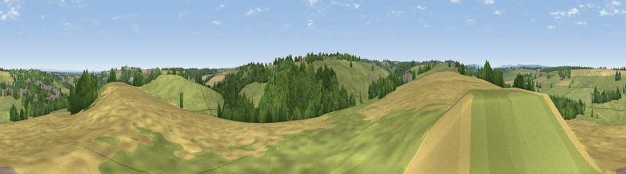

Viewpoint near Bardsey
#28727 in England · top 51% of its area beats it · near Bardsey · path 274 mWhere it is
The exact computed spot (SE 35725 43475). Click the marker for map links.
Public access: the nearest public right of way is about 274 m away — the final stretch may cross private land. Computed from Natural England's CRoW access layer and OpenStreetMap rights of way — not the legal definitive map. Always verify locally.
The view, rendered

A 360° render of this exact spot computed from the terrain model, tree cover and land cover — summer colours, afternoon light, calibrated against photographs of famous viewpoints. Real trees, hedges and buildings will differ in detail.
The panorama
Grey silhouette: terrain skyline in each direction (720 bearings, Earth curvature and refraction included). Dashed green: skyline with trees (+15 m) and buildings (+8 m) as obstacles. Blue strip: how far the ground is visible on each bearing.
Where the view opens
Wedge length = distance to the farthest visible ground on that bearing (vegetation-aware). Rings at 10, 25 and 50 km.
What fills the view
46% grassland · 31% cropland · 21% woodland · 2% built-up
Angular shares of the visible panorama (visual magnitude), not map area. Landscape diversity 0.49 (0–1 Shannon).
Key numbers
More beautiful places nearby
The staircase of upgrades: each row has a higher view potential than everything closer. Driving times are estimates from straight-line distance, calibrated against real road routing — check an actual route before setting out.
| Place | Direction | Drive | Score |
|---|---|---|---|
| Viewpoint near Bardsey | ENE · 0 km | ~1 min | 42.2 |
| Viewpoint near East Keswick | N · 2 km | ~4 min | 43.0 |
| Viewpoint near Rigton Hill | ENE · 3 km | ~7 min | 55.3 |
| Viewpoint near Kirkby Overblow | NNW · 6 km | ~12 min | 63.5 |
| Viewpoint near North Rigton | WNW · 10 km | ~20 min | 66.6 |
| Rawdon Trig point | WSW · 14 km | ~26 min | 69.6 |
| Rawdon Billing | WSW · 14 km | ~26 min | 72.7 |
| Viewpoint near Otley | W · 16 km | ~28 min | 77.5 |
53.88624, -1.45797 · source: screening · position refined by local search. Computed location — check access rights before visiting.